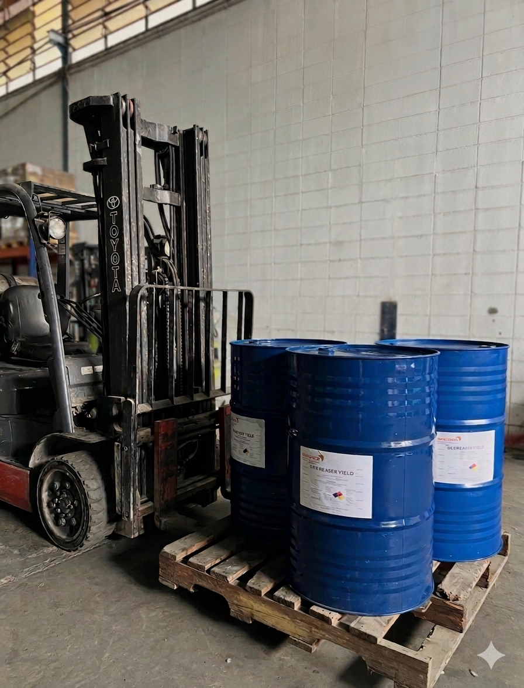

Un Mundo de Calidad y en Tiempo Récord
Desde el año 2010, en Disyuroca C.A. nos dedicamos a la formulación, desarrollo, manufactura y distribución integral de productos químicos especiales para el mantenimiento industrial e institucional con logística eficiente adaptada a las necesidades de tu empresa.

Trayectoria desde 2010
Más de 15 años abasteciendo sectores industriales, corporativos y comerciales con la máxima confiabilidad.
Formulación a la Medida
Desarrollamos y producimos nuevos productos químicos ajustados exactamente a las necesidades de tu organización.
Ahorro de Costos y Tiempo
Mantenimientos efectivos que reducen drásticamente el costo de horas/hombre en cada operación.
Atención y Asesoría Directa
Soporte personalizado, charlas de capacitación sin costo y acompañamiento técnico directo en planta.
Nuestros Clientes y Aliados
A lo largo de nuestra trayectoria iniciada en 2010, Disyuroca ha sido un aliado estratégico clave en el suministro comercial e industrial.
Red Comercial y Clientes Activos
Mantenemos un compromiso continuo con la cadena de suministro nacional atendiendo a diversos sectores:
- Empresas del Sector Industrial y Manufacturero
- Cadenas Comerciales y Distribuidores Autorizados
- Talleres Especializados y Flotas de Transporte Comercial
- Instituciones, Hospitales y Plantas Procesadoras